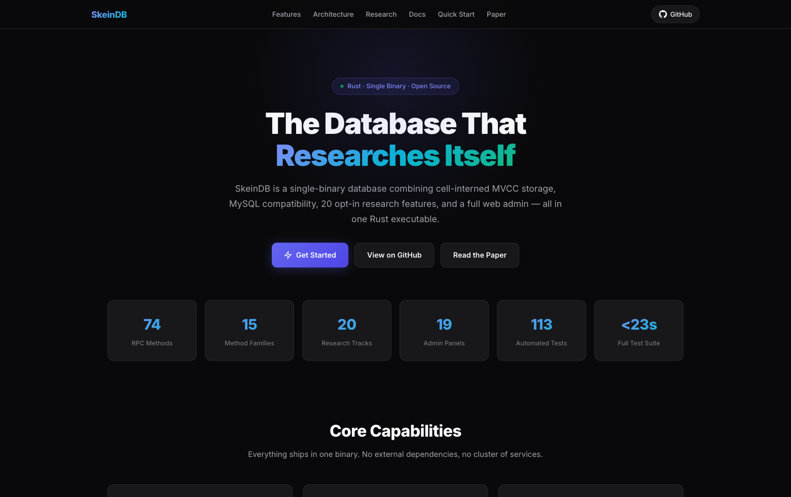
SkeinDB
Rust · Axum · MySQL · PostgreSQL · SkeinAdmin
Single-binary database engine with MySQL and PostgreSQL wire compatibility, SkeinAdmin control panel, 14 hardened research tracks, and sandboxed Wasm extensions.
Independent Research + Product Engineering
I design and deliver research-heavy software across database engines, iOS/macOS applications, and interactive systems. Scroll down to explore each project with visuals, technical context, and implementation highlights.
Featured Work
Tap Show More to see project details and screenshots.

Single-binary database engine with MySQL and PostgreSQL wire compatibility, SkeinAdmin control panel, 14 hardened research tracks, and sandboxed Wasm extensions.
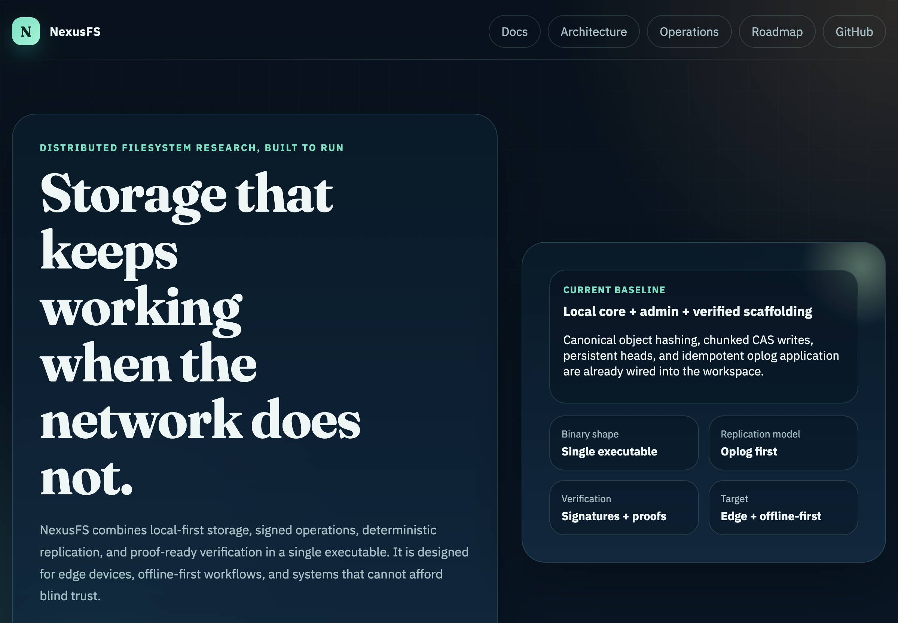
Verifiable offline-first distributed filesystem with signed operations, deterministic replication, and proof-ready architecture.
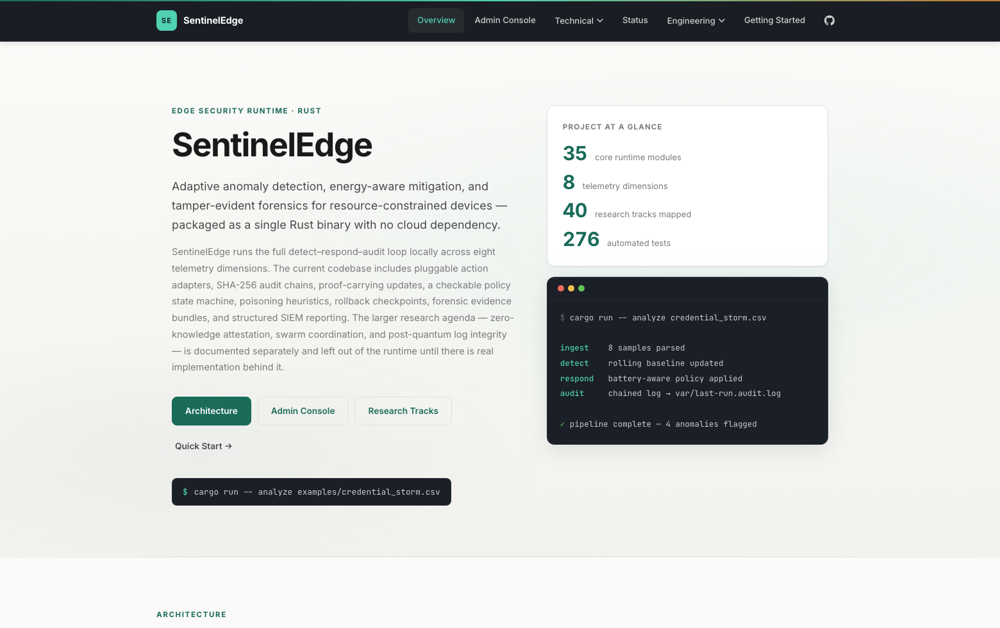
Unified XDR platform with cross-layer threat detection, automated response orchestration, and full-stack security telemetry across endpoints, networks, and cloud workloads.
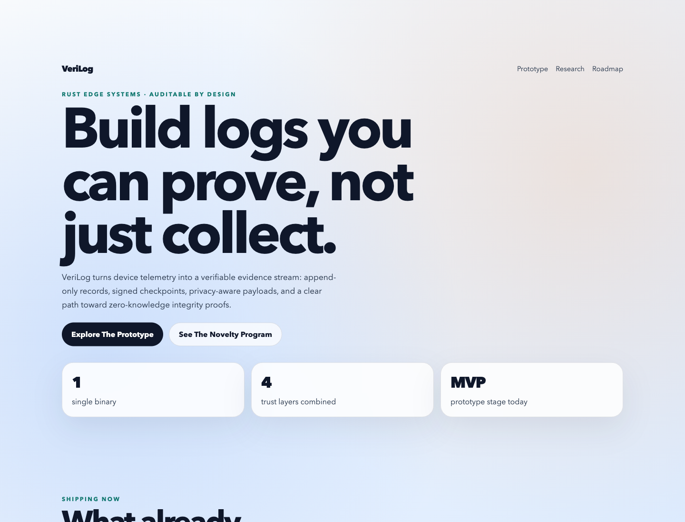
Edge-native evidence engine that turns device telemetry into tamper-evident logs with signed checkpoints and proof-ready trust layers.
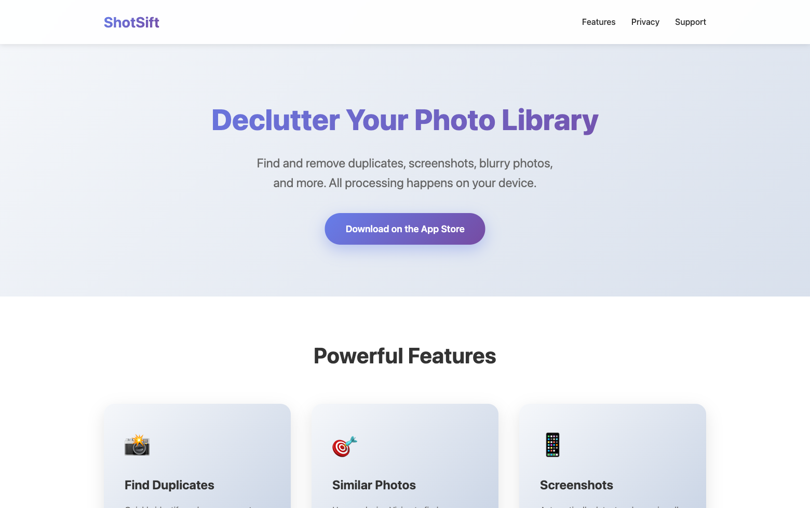
Private photo decluttering experience for duplicates, screenshots, bursts, and large-media cleanup workflows.
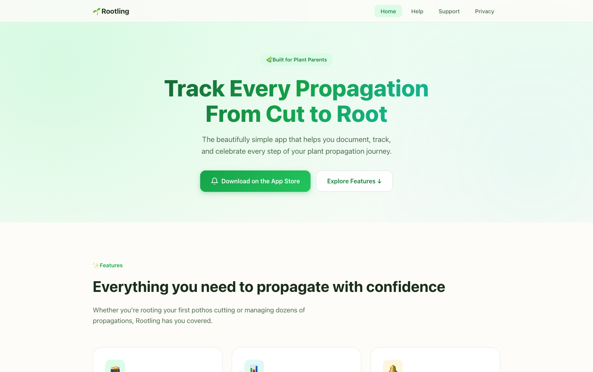
Plant propagation tracker with visual journals, reminders, weather context, and exportable records.
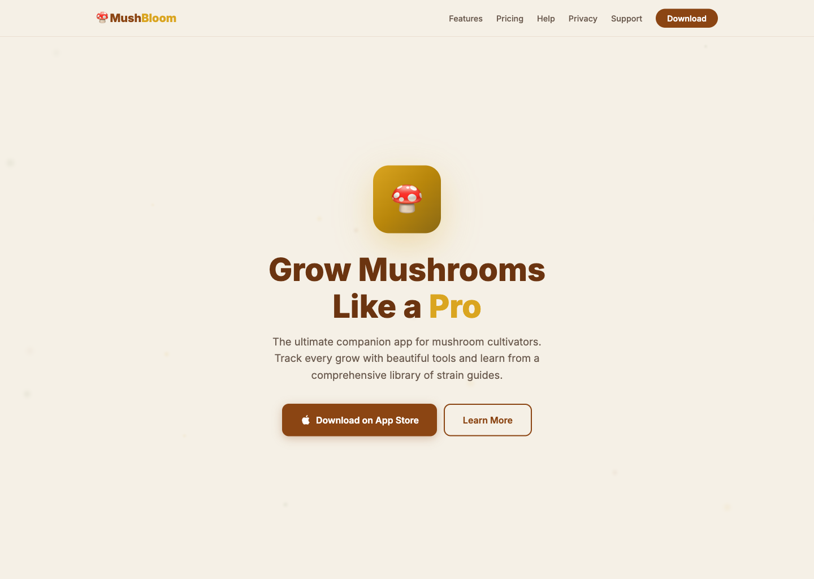
Mushroom cultivation companion with strain guides, grow journals, AI contamination scans, and environmental logging.
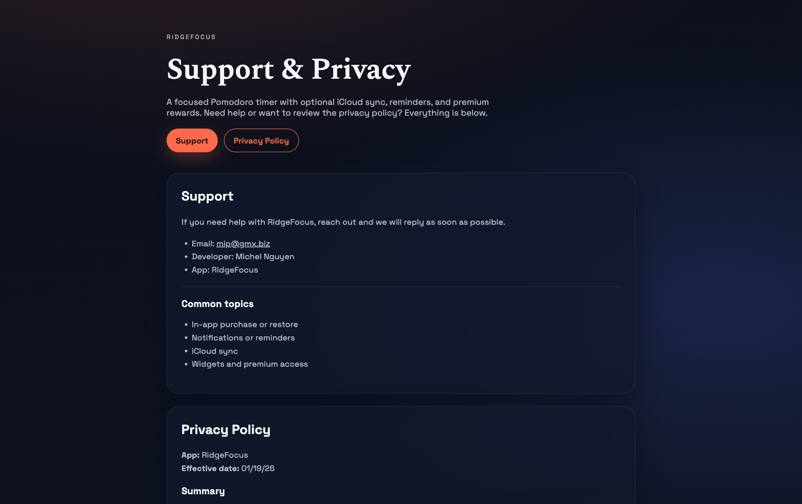
Pomodoro and deep-work platform with streak systems, widgets, and lightweight personal productivity insights.
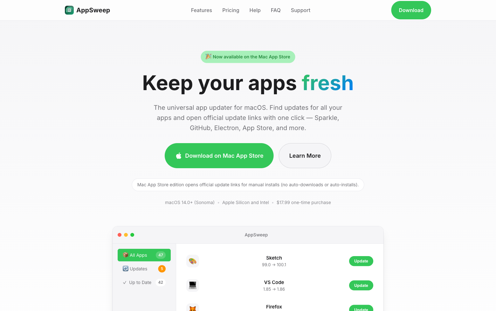
Universal macOS updater that merges multiple update sources into a single inventory and action flow.
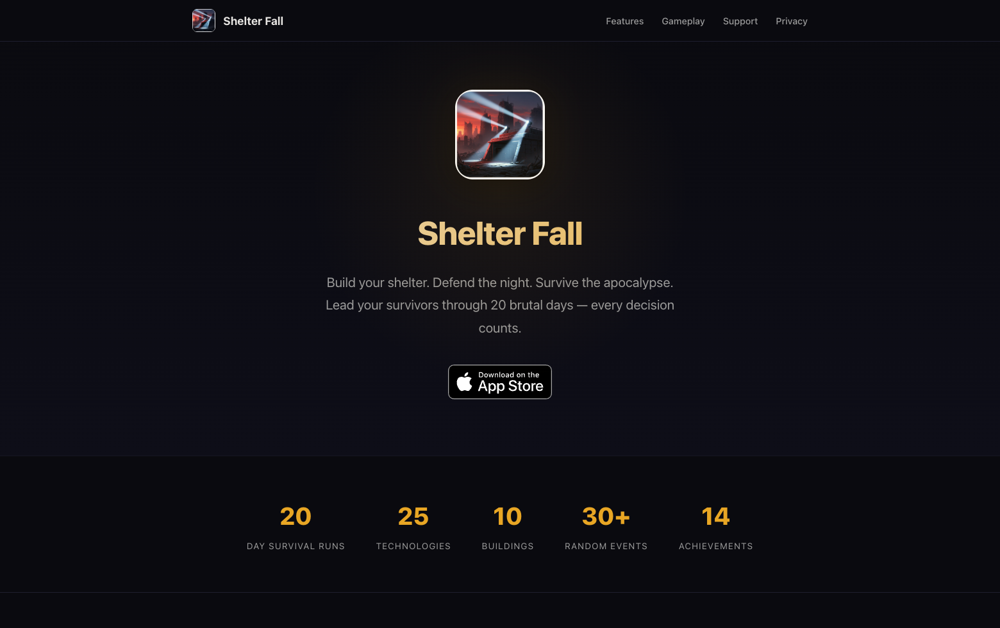
Post-apocalyptic strategy game with progression systems, dynamic events, and escalating survival pressure.
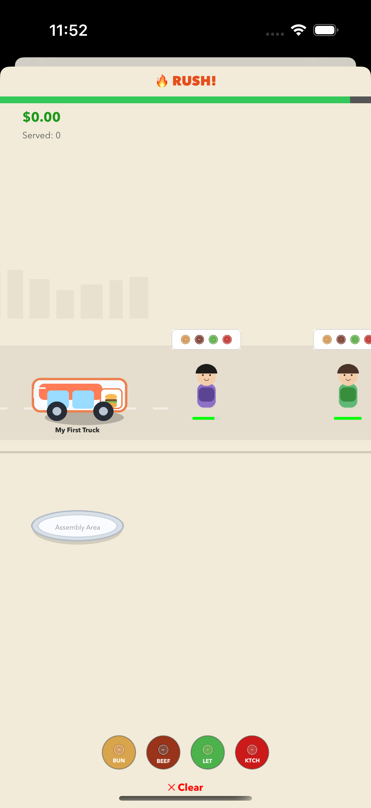
Food truck management simulator with rush gameplay, district strategy, truck upgrades, staff systems, and long-term tycoon progression.
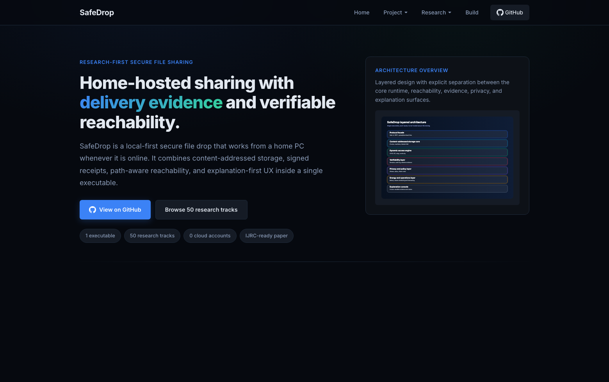
Home-hosted secure file sharing with proof-carrying delivery, reachability evidence, and explanation-first design.
AI-assisted macOS productivity tracker with local timeline screenshots, focus sessions, and private analytics.
Project LinkResearch
Peer-reviewed work, technical preprints, and creative publications across computing and theoretical domains.
ResearchGate preprint · Submitted to KDU KJMS
International Journal of Research in Computing (Jan 2026)
Media: Grokipedia Article
DOI: 10.47760/cognizance.2025.v05i11.009
Media: Grokipedia Article
Creative fiction publication.
Registered software copyright entry.
Notes & Essays
Selected notes, explainers, and behind-the-paper reflections.
The operational case for merging admin UI, wire protocols, and research tracks into one executable.
Read noteWhat "path-aware reachability" means for home-hosted SafeDrop and why receipts beat logs.
Read noteTrade-offs, compression choices, and open problems from the 2025 TechRxiv preprint.
Read noteMusic
A curated home for my released music, with direct listening links on YouTube Music and Spotify.
Listen to songs, albums, and new releases on my YouTube Music artist channel.
Follow the public Spotify artist profile for releases, saves, and playlist listening.
Albums & Releases
Click an album or single to load a playable Spotify preview.
Now Previewing
Expertise
Cross-functional capability from systems architecture to production app delivery and academic writing.
Academic Profile
Ongoing formal education, pre-doctoral cybersecurity research preparation, and peer-review activity aligned with active publication work.
General Sir John Kotelawala Defence University, Sri Lanka • Research preparation phase for graduate study.
University of the People, Pasadena, California, US • Currently enrolled
University of the People, Pasadena, California, US • Completed with High Honors
General Sir John Kotelawala Defence University, Colombo, Sri Lanka • Peer review service
Get in Touch
For collaboration, research opportunities, app partnerships, or speaking requests.